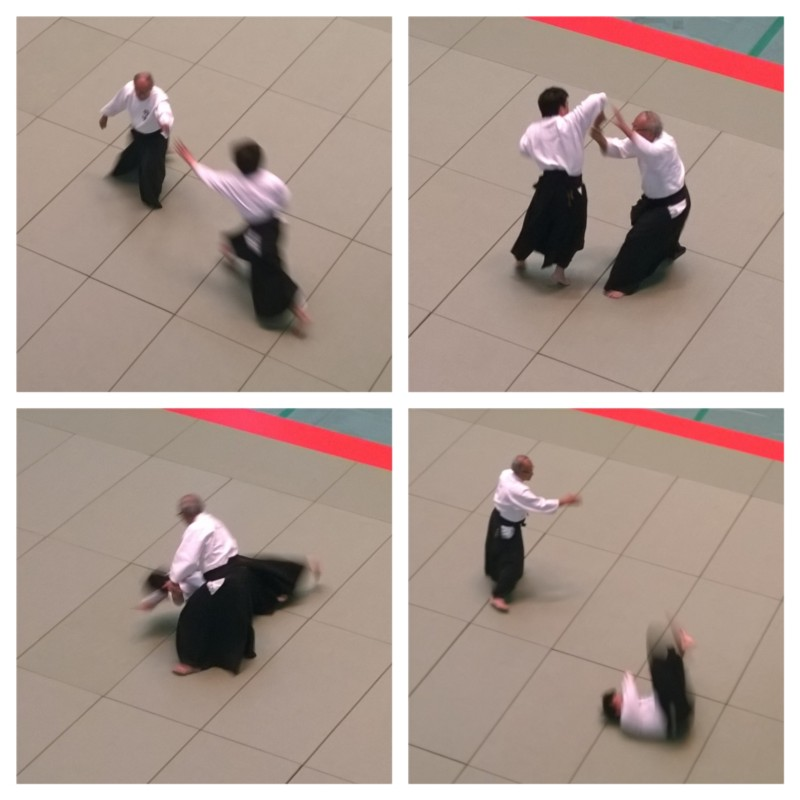
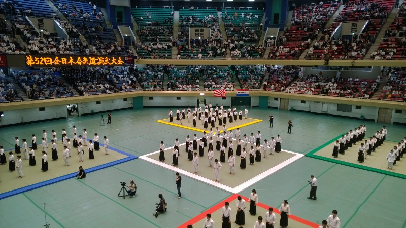

Aikido and a Taikai
(lit. “The way of unifying spirit” and lit. “Big meeting”)
At New Zealand universities, clubs are pretty much something you join on a whim and occasionally think about going to. At Japanese universities they play a much bigger role. However, before I get started on this (probably lengthy) article I need to define the two sorts of clubs that you find here.
- Circle (saakuru) — Similar to a club in New Zealand, a circle is a group of people who meet up every now and then to do something of mutual interest
- Club (bukatsu) — A far more serious organisation with multiple compulsory meetings per week
Which sort you join depends on your workload; if you join a bukatsu you’ll be expected to spend about as much time doing club activities as you do studying. Since I’m not finding the workload here too challenging, I decided to do so. Aikido sounded interesting and not too strenuous, so I decided to give it a go. After four weeks of training, I’ve realised I was half right …
As a side note, I also had a look at Kendo and Shorinji-kempo, as well as a few different circles. There are an amazingly large number here compared to Victoria —as evidenced by the formidably large book I was given at the start of the year which lists all the clubs and circles at the university. Unfortunately it contains far too much complicated Japanese for me to actually read it so I basically relied on word of mouth, but so far I’ve heard of clubs and circles for:
- Drinking (yeah, there are literally clubs where all you do is meet up once a week to get drunk)
- Music (both music appreciation and actually playing instruments)
- Traditional Japanese pastimes (calligraphy, flower arranging and so forth)
- Modern Japanese pastimes (manga, card games, video games and suchlike)
- Sports (probably pretty similar to NZ — I’m staying well away)
- Martial arts (which were the ones that caught my eye — after doing Kung Fu for five years I’ve developed a keen interest in martial arts)
Aikido is turning out to be one of the strictest clubs, probably because one of the guiding principles of Aikido is that it’s a way of life, not just a martial art. This means five 3-hour training sessions per week, for which there is a massive amount of protocol to memorise. In addition to “agtzmasu”, set phrases include “strshmasu” (“shitsurei shimasu”, an especially polite way of saying “excuse me” or “sorry”) and “otsdshita” (“otsukaresama deshita”, said after training to anyone who’ll listen as a way of saying “well done”).
Since I’ve never done Aikido before, I count as a first year, which means being polite to everyone except other first years. Japanese is rather different when you’re talking politely — there are a whole lot of grammar structures and verb forms you’re not allowed to use, plus a whole new set to replace them. Thankfully, polite language was the first thing we learned in high school. Unfortunately, it’s really hard to switch on-the-fly between it and casual language.
Of course, it’s different again when an OB visits. OB is taken from the English “Old Boy”, but in Japanese it’s a term of respect for a past graduate of the club. When talking to them we’re expected to use ultra-polite and respectful keigo, which is yet another set of verb conjugations and grammar patterns. Since I only started learning it last year, I’m pretty shaky on everything except basic set phrases, but at least it’s a good opportunity to practice …
While this might sound hard, everyone here is easy-going and forgiving of my mistakes. In fact, I initially found the senior students’ cheerful disregard of my platitudes annoying, but over time it’s become rather endearing.
The training itself is mostly fun, although it’ll take me a while to get used to the hour-long muscle training sessions. Thankfully those don’t happen every class; the focus is very much on “waza”, the same sort of set moves I’ve heard referred to as “kata” in Karate and “patterns” in Kung Fu. For those who don’t know what Aikido is, here’s an example of what you can do.
The idea is to redirect the energy of your attacker back at them rather than using your own strength
The moves feel very natural when you get them right, but there’s a lot to remember and a lot of instincts and habits to unlearn. However, the fundamental concepts (such as balance, weight shift, centre and circles) are very similar to Kung Fu so although I have a hard time remembering the moves, I do generally understand how they work. There are about 30 people in the club so it’s great being able to practice with various partners but annoying when everyone tells you different things.
A taikai is an event where martial arts schools from all over the place come together to see what the other schools are doing and to show off their own skills. There was an Aikido one in Tokyo a couple of weeks ago, which we (the Aikido club) went to watch as a group. This was a big relief for me since I had expected a grueling freshman camp that weekend. Much easier to get dates mixed up when you only understand half of what people are saying …
There’s not a whole lot to say about it, except that it was far bigger than I expected and that some of the demonstrations were very impressive. It’s amazing to watch a shihan (senior instructor) apparently wandering aimlessly around a mat while attackers repeatedly bounce off him. Unfortunately it didn’t include some of the multi-attacker drills I’ve seen on YouTube, but some of the instructors came pretty close.
Yeah … this is bigger than any martial arts venue I’ve seen before
Oh, and New Zealand was represented as well (by more people than America, I was surprised and proud to see). To be honest they seemed a bit sloppy compared to the over-disciplined Japanese, but their moves looked just as effective. Obviously this is something to think about continuing when I get back!
Now, because this is a longer post than usual, I’m going to make it even longer by including (instead of my usual “weird things” section) a few things I miss from New Zealand and a few things I will miss from Japan.
Things I miss
- Steak (and other chunky meat) — meat here is usually thinly sliced, which is fine but no match for an NZ stonegrill
- Ease of communication— I’m at the stage where I’m tired of not understanding people and just want to master Japanese already
- Friends and family — it goes without saying, but I feel like saying it anyway. And I want to say thank you to everyone who’s messaged/called me, including the people I haven’t had time to reply to …
Things I will miss
- Vending machines — yeah, I know they exist in NZ, but there’s a difference between being able to buy a bog-standard and overpriced range of Cola Cola drinks and being able to buy a vast range of cheap and tasty iced tea, fizzy drinks and coffee
- Rice balls and other cheap and filling snacks
- Friends (again) — I thought it would be hard making friends here, but Japanese people are so friendly and so delighted to see foreigners attempting to learn the language that it hasn’t been hard at all
- Can I just mention that vending machine coffee again? I’m sure any students reading this will appreciate the convenience of having hot or iced coffee available instantly for $1 a pop